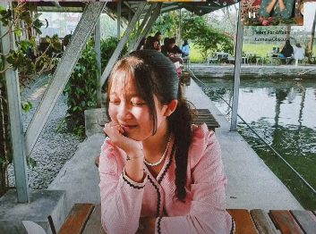
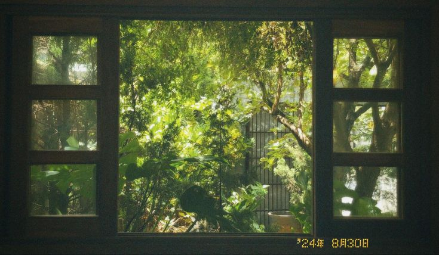

Gisela Pitrianti
Kelas X Broadcasting & Perfilman 2 — SMKN 1 Katapang
Pelajar mandiri, kreatif, berorientasi praktik di bidang multimedia.
Profil Singkat
Halo, saya Gisela Pitrianti. Saya belajar di SMKN 1 Katapang pada jurusan Broadcasting & Perfilman. Saya tertarik pada produksi video, storytelling visual, dan pengolahan suara. Saya senang belajar mandiri, mencoba perangkat baru, dan berkontribusi pada proyek sekolah.
Data Diri
- Nama: Gisela Pitrianti
- Tempat, Tanggal Lahir:)
- Alamat: Tokyo japan
- Sekolah: SMKN 1 Katapang
- Kelas / Jurusan: X Broadcasting & Perfilman 2
- Instagram: @macsmelow
Tentang Sekolah
SMKN 1 Katapang adalah sekolah menengah kejuruan dengan program studi Broadcasting dan Perfilman yang menyediakan fasilitas dasar untuk praktik produksi audio-visual. Di sini saya mengikuti mata pelajaran produksi, editing, dan praktik lapangan.
Keahlian
- Pengambilan gambar dengan kamera dasar
- Edit video (cutting, color basic)
- Pengoperasian audio dan perekaman lapangan
- Penulisan naskah dan pra-produksi
- Presentasi dan penyajian materi
Kemampuan
- Bekerja mandiri dan manajemen waktu
- Adaptasi cepat terhadap peralatan baru
- Kolaborasi tim pada produksi kreatif
- Problem solving saat produksi lapangan
Skill (Perangkat Lunak & Alat)
- Adobe Premiere Pro (dasar - menengah)
- Adobe After Effects (pengenalan)
- Adobe Photoshop (dasar)
- Audacity/Editor audio lainnya
- OBS Studio / perangkat perekaman dasar
Karya-karya
- Short film sekolah: "Cerita di Balik Layar" — Editor & Asisten Kamera
- Dokumentasi acara sekolah (liputan OSIS)
- Vlog edukatif singkat untuk tugas mata pelajaran
- Reel promosi acara pentas seni
GAMBAR GAMBAR
(Silakan taruh foto kesukaanmu ).


Kontak
Email: gisela@example.com
Instagram: @macsmelow